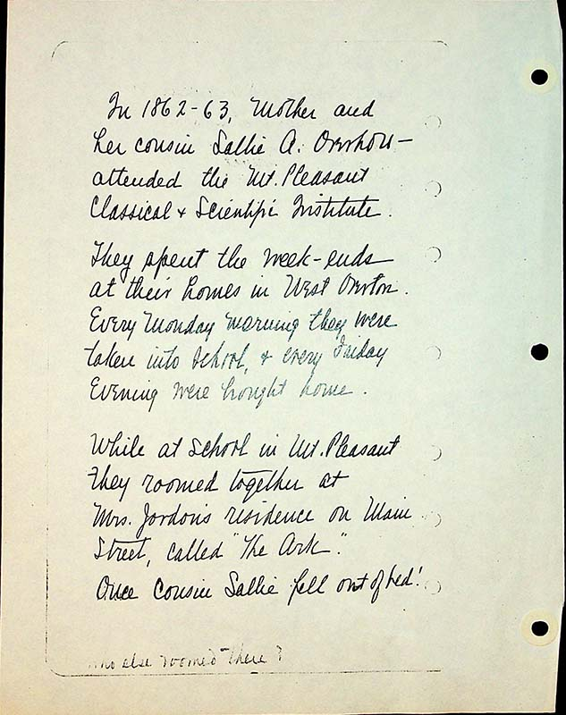
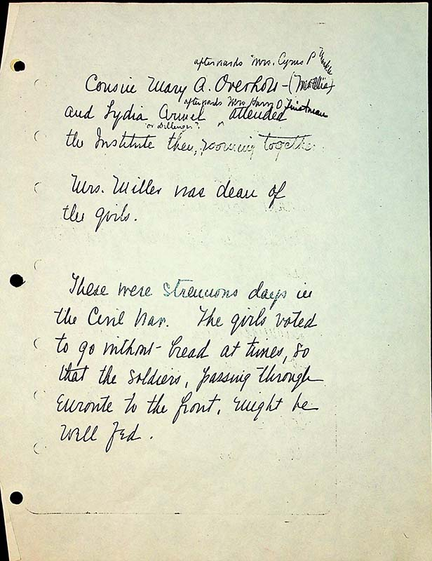

1n 1862-63, Mother and her cousin Sallie A. Overholt attended the Mt Pleasant Classical and Scientific Institute.
They spent the week-ends at their homes in West Overton.
Every Monday morning they were taken into school & every Friday evening were brought home.
While at school in Mt. Pleasant they roomed together at Mrs. Jordan’s residence on Main Street, called “The Ark”.
Once cousin Sallie fell out of bed!
Cousin Mary A Overholt ^afterwards Mrs Cyrus P Markle - (Mollie) and Lydia Armel (or Dillinger?) ^afterwards Mrs. Harry O Tinstman attended the Institute there, rooming together. Mrs. Miller was dean of the girls.
These were strenuous days in the Civil War. The girls voted to go without bread at times, so that the soldiers, passing through enroute to the front, might be well fed.